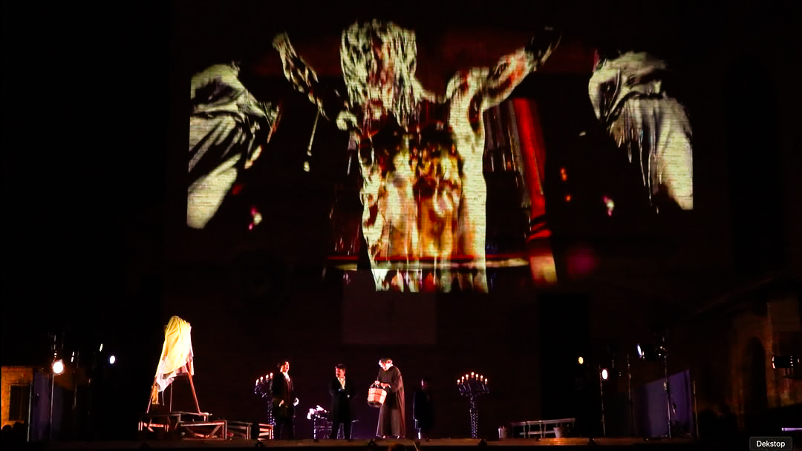
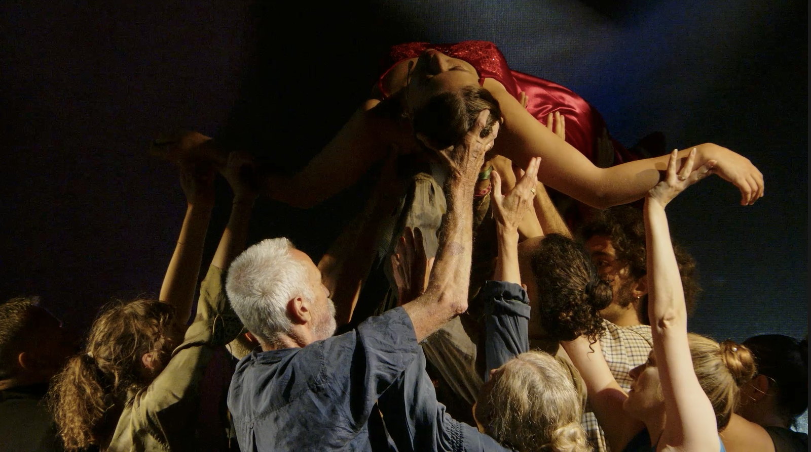

Tosca
Questa pagina raccoglie due sviluppi della ricerca scenografica su Tosca: la versione classica per il Festival dell'Opera di San Gimignano e la versione d'essai, opera ubiqua e site-specific nel borgo di Lari.

Festival dell'Opera
Tosca Classica
Versione scenica per il Festival dell'Opera di San Gimignano, con scenografia digitale in dialogo con la tradizione lirica.

Opera Ubiqua
Tosca d'essai
Percorso site-specific e immersivo: drammaturgia distribuita tra spazio urbano, performance dal vivo e immagine filmica.